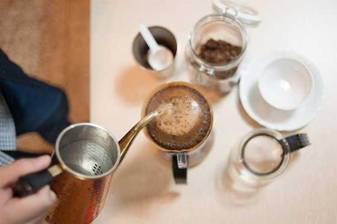
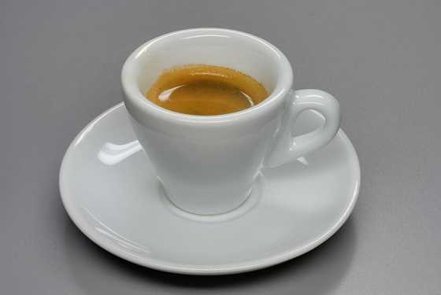
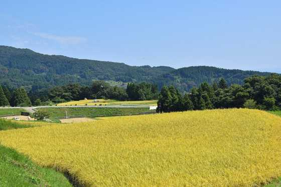
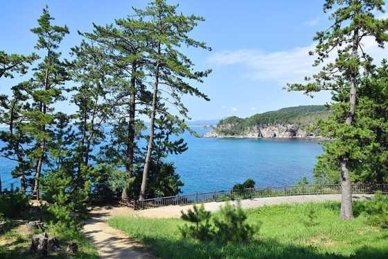
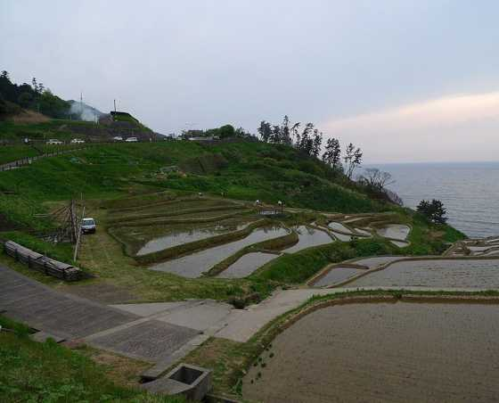
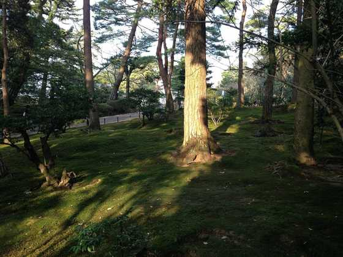

珈琲焙煎まめふく
直火でじっくり、豆ひと粒ずつに火を通す。かほくの小さな焙煎所。
お店について
珈琲焙煎まめふくは、石川県かほく市学園台にある自家焙煎の珈琲豆のお店です。公式Instagramでは、直火式焙煎機で自家焙煎したコーヒー豆を販売していることが紹介されています。
プロフィールには「テイクアウトはしておりません」との案内があり、豆の販売を中心としたお店とうかがえます。
店名の由来・理念は確認できていません。「豆」と「福」を思わせる名前ですが、これは制作側のイメージで、お店の考えではありません。



口コミ
以下は実際のお客様の声ではなく、掲載イメージの例です。
イメージ例
家で淹れる一杯が、ちょっと楽しみになりました。豆の香りが立ちます。
イメージ例
ギフトに選びました。缶を開けたときの香りで気持ちが明るくなります。
イメージ例
朝の一杯の相棒に。自分の好みに合う豆を探すのが楽しいです。
アクセス
〒929-1210 石川県かほく市学園台4丁目71
電話: 準備中 ／ 営業時間・定休日: 準備中



